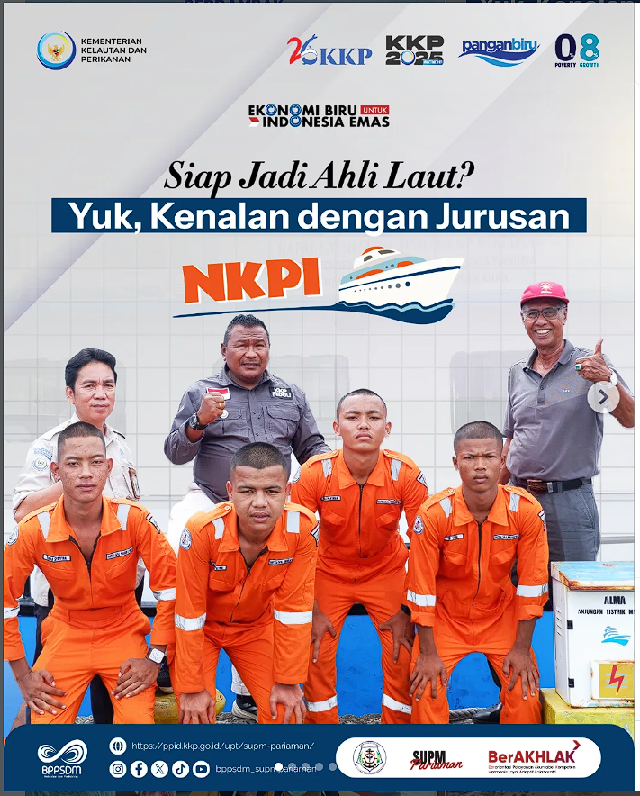

Selamat Datang di
SUPM PARIAMAN
"Pusat Pendidikan & Pelatihan Kelautan Terbaik"
Mencetak tenaga kerja yang kompeten, disiplin, dan berkarakter di bidang kelautan dan perikanan. Terletak di pesisir Pariaman dengan fasilitas pendukung modern.
Mencetak tenaga kerja yang kompeten, disiplin, dan berkarakter di bidang kelautan dan perikanan. Terletak di pesisir Pariaman dengan fasilitas pendukung modern.
Didirikan pada 20 Februari 1988 dengan nama SPP Negeri Pariaman di bawah Kementerian Pertanian. Setelah terbentuknya Kementerian Kelautan dan Perikanan, sekolah ini berubah nama menjadi SUPM Pariaman pada 18 Mei 2001. Sebagai sekolah vokasi, kami mencetak SDM terampil dengan sasaran utama anak pelaku perikanan.
Penyelenggara pendidikan kelautan dan perikanan yang unggul, berkelanjutan dan bertaraf internasional.

Nautika Kapal Penangkap Ikan
Mempelajari navigasi dan pengoperasian kapal penangkap ikan.
Teknika Kapal Penangkap Ikan
Fokus pada mesin dan sistem teknis kapal perikanan.
Agribisnis Perikanan Air Payau & Laut
Budidaya organisme perairan di laut dan tambak payau.
Agribisnis Pengolahan Hasil Perikanan
Pengolahan dan pengawetan hasil perikanan bernilai tambah.
Lulusan kami dibekali dengan berbagai sertifikasi keahlian standar nasional dan internasional untuk menjamin kesiapan kerja di industri maritim dan pengolahan.
Punya pertanyaan terkait PPDB, administrasi, atau kerja sama? Silakan kirimkan pesan Anda melalui formulir di bawah ini atau kunjungi kantor kami.